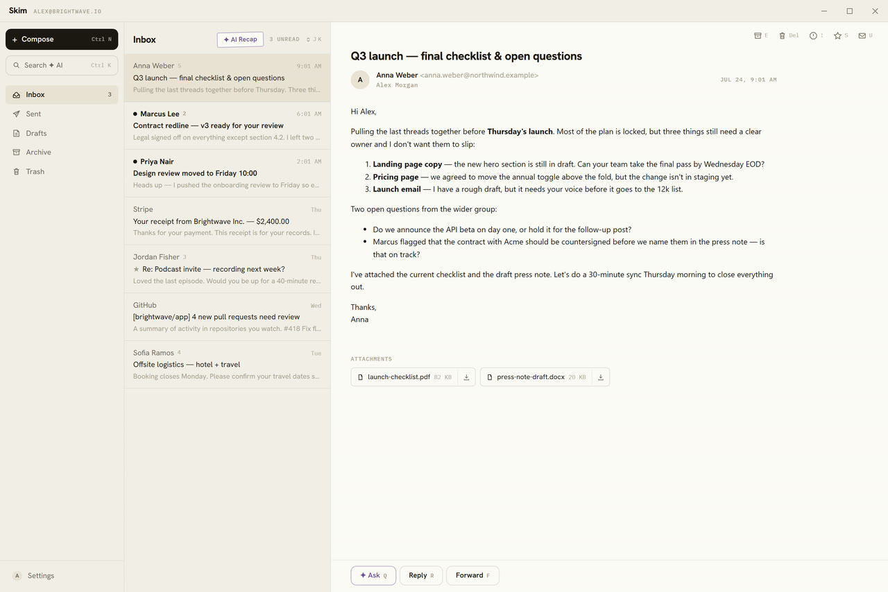
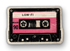
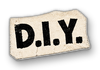
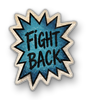
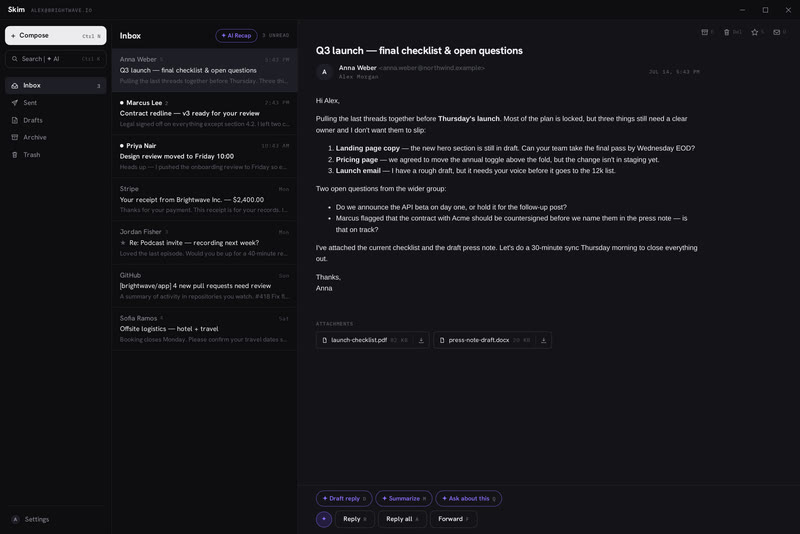
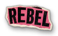
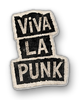

Minimalist, native, fast. BYOK for the AI assistant and co-writer. No subscriptions — free forever. Open source.
Skim_x.y.z_x64-setup.exe


Email clients usually come in two flavors: a browser cosplaying as an app, or a monstrous do-everything suite with ICQ-era vibes. Skim is neither.
A Rust core with a system WebView2 UI — no bundled browser like Electron. The installer is a few megabytes, cold start is instant, idle memory is modest. Installs without admin rights.
No calendar, no contacts manager, no rules, no filters, no snooze — none of the stuff you never actually use anyway. Fewer buttons means less cognitive load means less irritation. Need a do-everything suite? Install Outlook.
Buttons appear only when they're useful. There's no menu bar at all. Skim's whole job is to surface the right action at the right moment. How well it pulls that off is up for debate — but you can help!
Mail syncs over IMAP straight into a local SQLite database. It works offline, search is instant (FTS5), and every action applies at once and queues up — Skim catches up when the network returns. Zero telemetry, zero anal probes.
One hotkey to anything. Search your mail, jump to any folder, fire quick commands, and ask the AI across your whole mailbox — one window, no mouse.

There is no “Skim Pro” subscription, and there never will be. Paste your own Anthropic (Claude) or OpenRouter key (Claude, GPT, Gemini, Grok and hundreds more models) and the violet ✦ buttons come alive. Requests go straight from your machine to the provider — no proxy of ours, no markup. You pay the provider at cost; the key lives in Windows Credential Manager. No key? Skim just works as a fast email client (not amazing, but why not?).
Drafts in your voice — tell it what to say and get a finished, first-person email. Skim can analyze up to a hundred of your sent messages and write the way you write: the same greetings, sentence length, punctuation. It replies in the sender's language, even one you don't speak.
Drafts you refine in dialogue — “shorter”, “add a deadline”, “drop the exclamation marks”. Each tweak lands on the current text, keeping everything you didn't ask to change. Edit by hand and the AI takes that into account too.
Ask about an email — a question about one message or the whole thread (up to 25 emails in context), with follow-ups. It answers only from the content: if the answer isn't in the conversation, it says so.
Chat with your whole mailbox — “which invoices are still unpaid this month?” right in the command palette. Skim searches your mail (FTS5/bm25), answers, and cites the source emails as clickable chips.
AI recap of your unread — one click digests up to 20 unread emails: what needs a reply first, with deadlines and cited sources, newsletters piled off to the side. It marks what it covered as read.
It knows the context — every prompt carries the current date, weekday, time and your timezone, your interface language, and — where relevant — the entire thread. So “reply that I'll make it by Friday” becomes a concrete date, not an abstraction.


Skim ships under the MIT license — open source you can use however you like. Found a bug or have an idea? Open an issue. Better yet, just send a pull request.
Download the latest installer — the .exe (NSIS) installs per-user without admin rights; an .msi is published for managed environments. Requires Windows 10/11 with WebView2 (preinstalled on Windows 11).

Everything people usually ask before switching their Windows email client.
Yeah, obviously. It's 2026 — wake up, samurai! Nobody writes code by hand anymore.
Yes. Skim is free and open source under the MIT license — no subscription, no account, no upsell. The AI features are optional and use your own API key, so you pay your AI provider directly at cost.
Gmail (one-click Google sign-in or an app password), Outlook, Yahoo and iCloud via app passwords, and any other mailbox over standard IMAP/SMTP. Server settings are filled in automatically for the big providers.
Only when you ask it to. AI features stay off until you paste your own Anthropic or OpenRouter key, and every request goes directly from your machine to the provider — no middleman servers. The key is stored in Windows Credential Manager.
Yes — Skim supports Windows 10 and 11 with WebView2 (preinstalled on Windows 11). The installer is about 5 MB and installs per-user, no admin rights required.
Skim is deliberately small: a fast, keyboard-first Windows email client with a native Rust core instead of Electron, offline-first actions, instant local search, and an AI copilot that works with your own key. No calendar, no rules engine, no bloat.
Yes. Mail syncs over IMAP straight into a local SQLite cache on your device, so Skim works offline and search is instant. There are no Skim servers and zero telemetry.